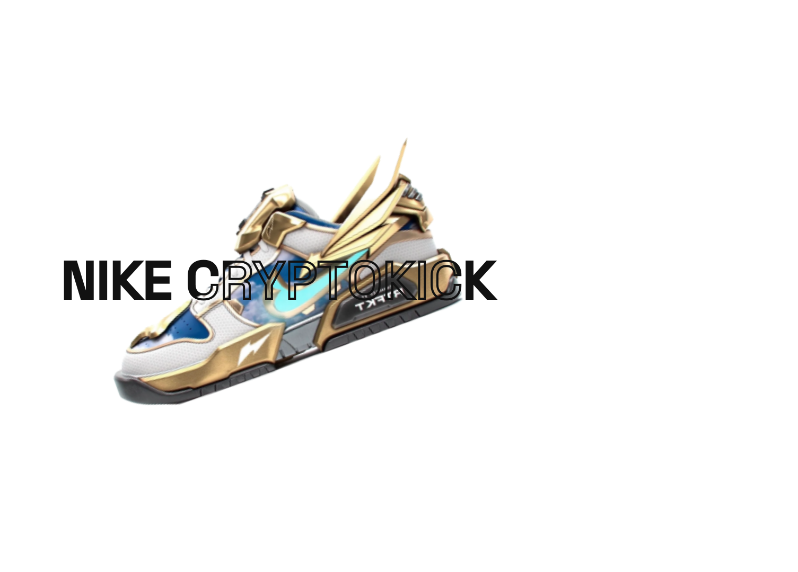

Inicio
Crear
Login
AGREGA TU TOQUE MÁGICO
Cuando toda esa inspiración se aplica al diseño de tu calzado, cualquier cosa parece posible. ¡Voilá! Crea tu calzado personalizado con el servicio de cocreación de NAIKE.
Spin & Style
